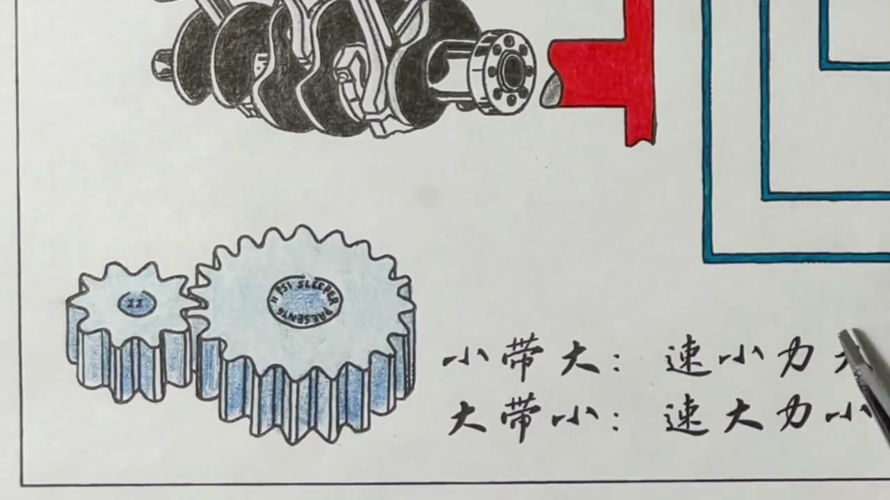
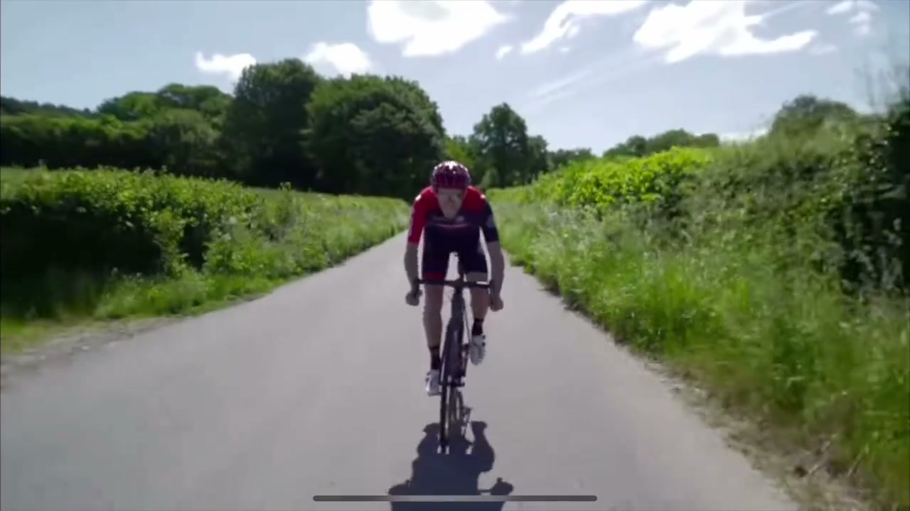
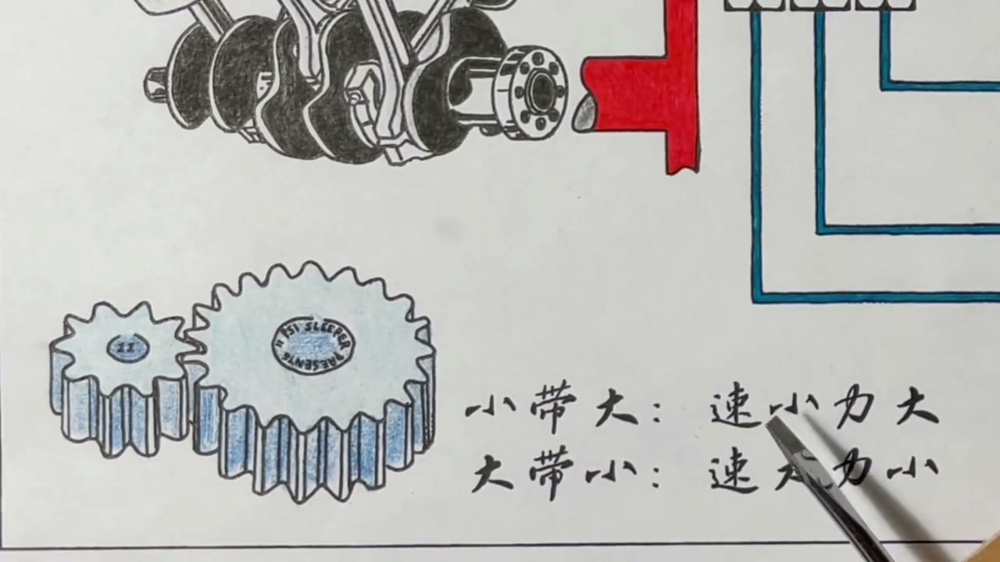
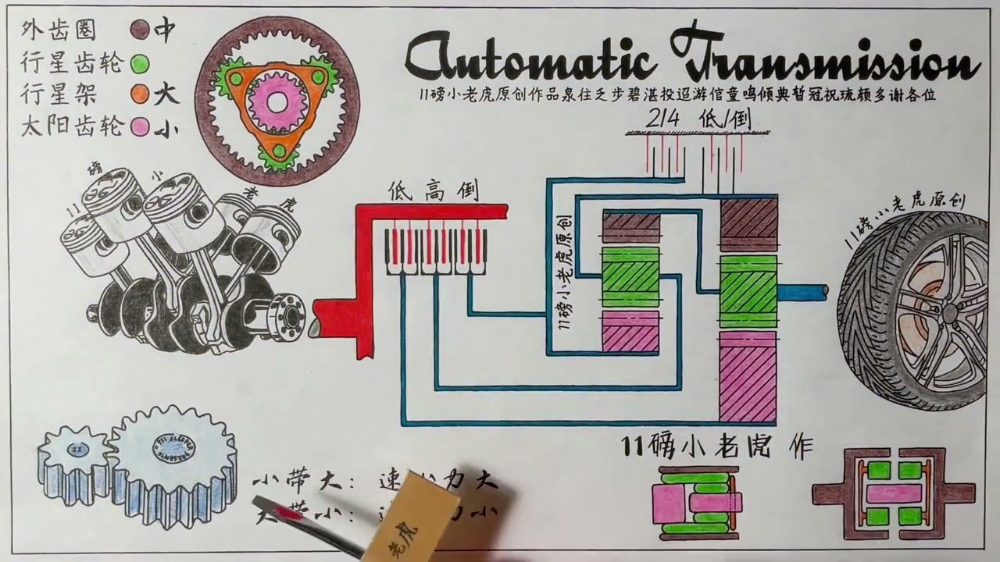
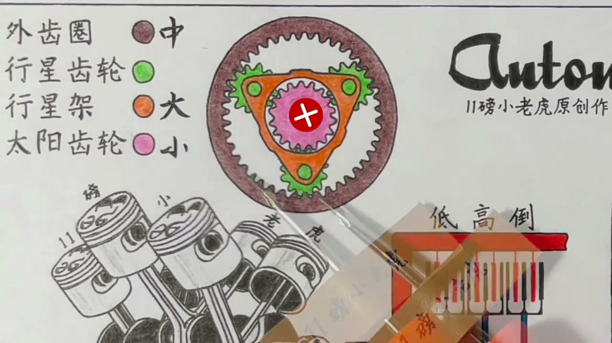

01
中文
变速箱中的变速，根就在两个尺寸不同的齿轮。
EN
A transmission's job comes down to two gears of different sizes.
表达提示different-sized gears（不同尺寸的齿轮）

Scene English · 汽车 · AT变速箱
How Does an AT Automatic Transmission Work? (Part 1)
🎧 语音讲解
How Gears Change Speed
情境变速箱变速的根就是两个尺寸不同的齿轮：小齿轮带大齿轮速度减小但力气变大，大齿轮带小齿轮速度变大但力气变小。
变速箱中的变速，根就在两个尺寸不同的齿轮。
A transmission's job comes down to two gears of different sizes.
表达提示different-sized gears（不同尺寸的齿轮）
小齿轮带着大齿轮转，大齿轮的转速就一定会减小。
A small gear driving a big gear slows the big one down.
表达提示drive（带动）
但速度减小的同时，它会变得更加有力气。
But as speed drops, the turning force grows.
表达提示turning force（扭矩）
反过来大齿轮带小齿轮，速度变大但力气变小。
Reversed, a big gear driving a small one raises speed but cuts force.
表达提示reverse（反过来）
drive（带动
turning force（扭矩

Gear Ratios via a Mountain Bike
情境山地自行车高档位是小带大：踩踏板轻松但车速慢；低档位大带小：踩得费力但提速快。
用最高的挡位去骑，实际上就是一种小带大的情况。
Riding the highest gear is exactly a small-driving-big setup.
表达提示highest gear（最高挡位）
你踩踏板非常轻松，但自行车前进的速度还是很慢。
You pedal easily, yet the bike creeps along.
表达提示pedal easily（轻松踩踏）
低档位大带小，你踩起来非常吃力，但速度能上来很快。
In the lowest gear, pedaling is hard work but speed builds fast.
表达提示hard work（吃力）
highest gear（最高挡位
pedal easily（轻松踩踏

Gear Ratio and Drive Ratio
情境齿比（传动比）就是从动轮和驱动轮的尺寸比值；齿轮尺寸和齿数直接挂钩，所以也叫齿比。
齿比或传动比，指的就是从动轮和驱动轮的尺寸比值。
Gear ratio is the size ratio of the driven gear to the driving gear.
表达提示driven gear（从动轮）
由于齿轮尺寸一般和它有几个齿直接挂钩，所以传动比也叫齿比。
Since gear size tracks tooth count, drive ratio is also called gear ratio.
表达提示tooth count（齿数）
比如从动轮20个齿，驱动轮10个齿，齿比就是2比1。
20 driven teeth over 10 driving teeth gives a 2:1 ratio.
表达提示2:1 ratio（2比1）
经过这一组齿轮，力放大两倍，速度减小两倍。
Through this pair, force doubles while speed halves.
表达提示force doubles（力翻倍）
driven gear（从动轮
tooth count（齿数

Why Cars Need Gears
情境自行车变速为了照顾人的感受；发动机不会累，汽车变速是为了照顾车轮的感受——用低档位获得大扭矩起步，用高档位高速巡航。
上坡骑车累，挂高档位车速慢但腿省力；要迅速提速就换低档位。
Uphill, a high gear saves your legs; a low gear gives quick acceleration.
表达提示save your legs（省力）
汽车的低档位是小带大，高档位是大带小，和自行车正好相反。
In cars, low gear is small-driving-big—opposite to a bike.
表达提示opposite（正好相反）
发动机不会累，只要给它汽油它就能源源不断输出动力。
An engine never tires; give it fuel and it keeps delivering power.
表达提示endless power（源源不断的动力）
所以汽车的变档机构，是为了照顾车轮的感受。
So a car's gearing exists to serve the wheels' needs.
表达提示serve the wheels（服务车轮）
save your legs（省力
opposite（正好相反

Gears and Launch Feel
情境一档齿比约3.5:1，力放大3.5倍推背感强但车速慢；档位越高速度越快但力越小，所以高速巡航用高档、超车要降档。
挂着一档油门踩到六七千转，车速才五六十，但特别有力气。
In first gear, revving to 6-7k RPM barely reaches 50-60 km/h, yet pulls hard.
表达提示pulls hard（动力十足）
一档齿比一般在3.5比1左右，力放大3.5倍，速度缩小3.5倍。
First gear's ratio is about 3.5:1—force multiplied, speed divided.
表达提示ratio of 3.5 to 1（3.5比1）
越往高档，驱动齿轮越来越大，到轮上的力越来越小但速度越来越快。
Higher gears shrink the driven gear, trading force for speed.
表达提示trade force for speed（以力换速）
高速巡航用高档位，想迅速超车时降档用低档位。
Cruise in a high gear, but downshift for quick overtaking.
表达提示downshift（降档）
pulls hard（动力十足
ratio of 3.5 to 1（3.5比1

The Planetary Gearset
情境AT变速箱用行星齿轮组实现变速：太阳齿轮居中，行星齿轮绕它转，行星架把它们架起来，外齿圈包裹在外。
AT自动变速箱采用的结构更加巧妙，占的体积也更小。
The AT transmission uses a cleverer, more compact structure.
表达提示compact structure（紧凑结构）
中间的粉色是太阳齿轮，绿色的三个是行星齿轮。
The pink sun gear sits at the center; the three green ones are planet gears.
表达提示sun gear（太阳齿轮）
橘黄色的三角形是行星架，最外面的褐色部分是外齿圈。
The orange carrier holds the planets; the brown outer ring surrounds them.
表达提示planet carrier（行星架）
行星齿轮被外齿圈和太阳齿轮夹在了中间。
The planet gears are sandwiched between the ring and sun gears.
表达提示sandwiched（夹在中间）
compact structure（紧凑结构
sun gear（太阳齿轮

Hold One, Drive One, Output One
情境行星齿轮组主要看三个部件：任意一个固定住，剩下两个转动其中一个，另一个就会被驱动起来。
行星齿轮组运行时，主要看三个部件，不用看行星齿轮本身。
In operation, watch the three main parts, not the planets themselves.
表达提示main parts（主要部件）
三样东西中任意一样固定住，剩下的两样转动其中一个，另一个就会被驱动。
Hold any one part still; turning one of the rest drives the other.
表达提示hold it still（固定住）
按住太阳轮转行星架，行星轮自转带动外齿圈同向转，就是行星架驱动外齿圈。
Hold the sun, turn the carrier, and the planets spin the ring the same way.
表达提示spin the ring（带动外齿圈）
main parts（主要部件
hold it still（固定住

Reverse Comes from Holding the Carrier
情境按住行星架转太阳轮，行星轮只能原地自转，带动外齿圈反向旋转——这就成了倒挡。
按住行星架，顺时针转动太阳齿轮，行星轮只能原地自转。
Hold the carrier and turn the sun clockwise; the planets just spin in place.
表达提示spin in place（原地自转）
顺时针的太阳轮让行星齿轮逆时针转，行星齿轮再带动外齿圈逆时针转。
The clockwise sun makes planets spin counterclockwise, reversing the ring.
表达提示reverse direction（反转）
这样太阳齿轮就驱动着外齿圈反转了，拿来做倒挡再合适不过。
The sun drives the ring in reverse—perfect for the reverse gear.
表达提示reverse gear（倒挡）
spin in place（原地自转
reverse direction（反转
说变速根本
说齿比定义
说低档高挡
说换挡时机
说行星齿轮
说倒挡原理
高档位是速度快力小。
汽车档位与自行车相反。
一档别长期高转。
齿比是变速变矩的核心。
档位多不代表原理变。